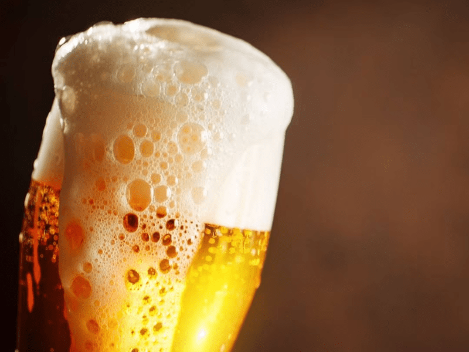
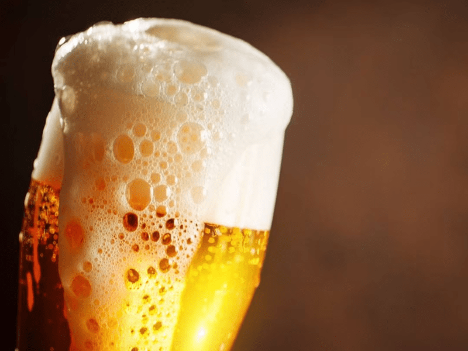

Bienvenido a Beer Welt - Auténtica Cerveza Artesanal
En Beer Welt, estamos comprometidos con la tradición y la calidad. Somos una cervecería familiar dedicada a la creación de cervezas artesanales únicas que celebran la rica herencia cervecera y los sabores auténticos. Desde nuestros inicios, hemos trabajado con pasión y dedicación para ofrecerte cervezas que no solo satisfacen el paladar, sino que también cuentan una historia en cada sorbo.
Nuestras recetas están inspiradas en métodos tradicionales, utilizando ingredientes locales y naturales. Cada lote es elaborado con amor y cuidado, garantizando una experiencia de sabor inigualable. Ya sea que seas un amante de la cerveza experimentado o alguien que recién comienza su viaje en el mundo de la cerveza artesanal, en Beer Welt tenemos algo especial para ti.
Únete a nosotros en este viaje cervecero y descubre por qué Beer Welt es más que una bebida; es una celebración de familia, tradición y el arte de hacer cerveza.
 
